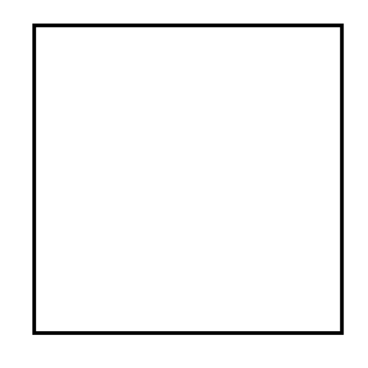

順番に書いていきましょう
鎌の刃の部分
鎌の持ち手部分

この動画シリーズを参考にします
(((y≥-x+7∧y≤-(3/20)x+9∧y≤x+5∧y≥x+5/2)∨((x-((361-sqrt(685))/(36)))^(2)+(y-((sqrt(685)-1)/36))^2≤(((sqrt(685)-1)/36))^2)∨(y≥-(19/18)x+(19/2)∧y≤-(18/19)(x-10)+1∧y≤x+(5/2)∧y≥x-(361/36)+(1369/(36sqrt(685)))))∨(((x-2)^2+(y-5)^2≥34∧(x-(7/2))^2+(y-(9/2))^2≤(65/2)∧y≥(((9/2+101sqrt(65/4726714))-(5+29sqrt(17/120961)))/((7/2+767sqrt(130/2363357))-(2+491sqrt(17/120961))))(x-(2+491sqrt(17/120961)))+5+29sqrt(17/120961))∨((((9/2+101sqrt(65/4726714))-(5+29sqrt(17/120961)))/((7/2+767sqrt(130/2363357))-(2+491sqrt(17/120961))))(x-(2+491sqrt(17/120961)))+5+29sqrt(17/120961)≥y∧(x-799/154)^2+(y-799/154)^2≥(524133-308sqrt(2056337))/11858∧(x-989/173)^2+(y-3215/692)^2≤(17926437-692sqrt(307236410))/478864∧y≤(9/10)x+1/2)∨((x-1/2)^2+(y-3/2)^2≤17/8∧(x-3/2)^2+(y-1/2)^2≤17/8)∨((x-7/2)^2+(y-1/2)^2≥97/8-sqrt(85)∧(x-1/2)^2+(y-7/2)^2≥97/8-sqrt(85)∧y≥(5-x)/3∧y≥5-3x∧y≤((((2856-sqrt(362(97-8sqrt(85)))+2sqrt(181(11571-1448sqrt(85)+32sqrt(362(97-8sqrt(85))))))/1444)-1/2)/(((2856-sqrt(362(97-8sqrt(85)))+2sqrt(181(11571-1448sqrt(85)+32sqrt(362(97-8sqrt(85))))))/1444)-7/2))(x-7/2)+1/2∧y≤((((2856-sqrt(362(97-8sqrt(85)))+2sqrt(181(11571-1448sqrt(85)+32sqrt(362(97-8sqrt(85))))))/1444)-7/2)/(((2856-sqrt(362(97-8sqrt(85)))+2sqrt(181(11571-1448sqrt(85)+32sqrt(362(97-8sqrt(85))))))/1444)-1/2))(x-1/2)+7/2)∨((x-(7171-sqrt(35303793-1384sqrt(307236410)))/1384)^2+(y-(7171-sqrt(35303793-1384sqrt(307236410)))/1384)^2≤((-529623+3460sqrt(189735305-111496sqrt(2056337))+770sqrt(3196881701-125252sqrt(307236410))-13937sqrt(35303793-1384sqrt(307236410)))^2/372058114060864)+((-126842+3114sqrt(189735305-111496sqrt(2056337))+693sqrt(3196881701-125252sqrt(307236410))-13937sqrt(35303793-1384sqrt(307236410)))^2/372058114060864))∨((x-((2856-sqrt(362(97-8sqrt(85)))+2sqrt(181(11571-1448sqrt(85)+32sqrt(362(97-8sqrt(85))))))/1444))^2+(y-((2856-sqrt(362(97-8sqrt(85)))+2sqrt(181(11571-1448sqrt(85)+32sqrt(362(97-8sqrt(85))))))/1444))^2≤((10-((2856-sqrt(362(97-8sqrt(85)))+2sqrt(181(11571-1448sqrt(85)+32sqrt(362(97-8sqrt(85))))))/1444))^2)/181)∨((x-1/4)^2+(y-1/4)^2≤1/16)∨((x-2+sqrt(2))^2+(y-2+sqrt(2))^2≤(2-sqrt(2))^2)))∨((((y-12.5)/2.5>=((sin(18°)*(1+sin(54°)))/((sin(18°)-1)*cos(54°)))*(x-5)/2.5∧(y-12.5)/2.5>=-((sin(18°)*(1+sin(54°)))/((sin(18°)-1)*cos(54°)))*(x-5)/2.5∧(y-12.5)/2.5<=1+((1+sin(54°))/cos(54°))*(x-5)/2.5∧(y-12.5)/2.5<=1-((1+sin(54°))/cos(54°))*(x-5)/2.5)∨((-(x-5)/2.5*sin(72°)+(y-12.5)/2.5*cos(72°))>=((sin(18°)*(1+sin(54°)))/((sin(18°)-1)*cos(54°)))*((x-5)/2.5*cos(72°)+(y-12.5)/2.5*sin(72°))∧(-(x-5)/2.5*sin(72°)+(y-12.5)/2.5*cos(72°))>=-((sin(18°)*(1+sin(54°)))/((sin(18°)-1)*cos(54°)))*((x-5)/2.5*cos(72°)+(y-12.5)/2.5*sin(72°))∧(-(x-5)/2.5*sin(72°)+(y-12.5)/2.5*cos(72°))<=1+((1+sin(54°))/cos(54°))*((x-5)/2.5*cos(72°)+(y-12.5)/2.5*sin(72°))∧(-(x-5)/2.5*sin(72°)+(y-12.5)/2.5*cos(72°))<=1-((1+sin(54°))/cos(54°))*((x-5)/2.5*cos(72°)+(y-12.5)/2.5*sin(72°)))∨((-(x-5)/2.5*sin(144°)+(y-12.5)/2.5*cos(144°))>=((sin(18°)*(1+sin(54°)))/((sin(18°)-1)*cos(54°)))*((x-5)/2.5*cos(144°)+(y-12.5)/2.5*sin(144°))∧(-(x-5)/2.5*sin(144°)+(y-12.5)/2.5*cos(144°))>=-((sin(18°)*(1+sin(54°)))/((sin(18°)-1)*cos(54°)))*((x-5)/2.5*cos(144°)+(y-12.5)/2.5*sin(144°))∧(-(x-5)/2.5*sin(144°)+(y-12.5)/2.5*cos(144°))<=1+((1+sin(54°))/cos(54°))*((x-5)/2.5*cos(144°)+(y-12.5)/2.5*sin(144°))∧(-(x-5)/2.5*sin(144°)+(y-12.5)/2.5*cos(144°))<=1-((1+sin(54°))/cos(54°))*((x-5)/2.5*cos(144°)+(y-12.5)/2.5*sin(144°)))∨((-(x-5)/2.5*sin(216°)+(y-12.5)/2.5*cos(216°))>=((sin(18°)*(1+sin(54°)))/((sin(18°)-1)*cos(54°)))*((x-5)/2.5*cos(216°)+(y-12.5)/2.5*sin(216°))∧(-(x-5)/2.5*sin(216°)+(y-12.5)/2.5*cos(216°))>=-((sin(18°)*(1+sin(54°)))/((sin(18°)-1)*cos(54°)))*((x-5)/2.5*cos(216°)+(y-12.5)/2.5*sin(216°))∧(-(x-5)/2.5*sin(216°)+(y-12.5)/2.5*cos(216°))<=1+((1+sin(54°))/cos(54°))*((x-5)/2.5*cos(216°)+(y-12.5)/2.5*sin(216°))∧(-(x-5)/2.5*sin(216°)+(y-12.5)/2.5*cos(216°))<=1-((1+sin(54°))/cos(54°))*((x-5)/2.5*cos(216°)+(y-12.5)/2.5*sin(216°)))∨((-(x-5)/2.5*sin(288°)+(y-12.5)/2.5*cos(288°))>=((sin(18°)*(1+sin(54°)))/((sin(18°)-1)*cos(54°)))*((x-5)/2.5*cos(288°)+(y-12.5)/2.5*sin(288°))∧(-(x-5)/2.5*sin(288°)+(y-12.5)/2.5*cos(288°))>=-((sin(18°)*(1+sin(54°)))/((sin(18°)-1)*cos(54°)))*((x-5)/2.5*cos(288°)+(y-12.5)/2.5*sin(288°))∧(-(x-5)/2.5*sin(288°)+(y-12.5)/2.5*cos(288°))<=1+((1+sin(54°))/cos(54°))*((x-5)/2.5*cos(288°)+(y-12.5)/2.5*sin(288°))∧(-(x-5)/2.5*sin(288°)+(y-12.5)/2.5*cos(288°))<=1-((1+sin(54°))/cos(54°))*((x-5)/2.5*cos(288°)+(y-12.5)/2.5*sin(288°))))∧¬((((y-12.5)/sqrt(25/8)>((sin(18°)*(1+sin(54°)))/((sin(18°)-1)*cos(54°)))*(x-5)/sqrt(25/8))∧((y-12.5)/sqrt(25/8)>-((sin(18°)*(1+sin(54°)))/((sin(18°)-1)*cos(54°)))*(x-5)/sqrt(25/8))∧((y-12.5)/sqrt(25/8)<1+((1+sin(54°))/cos(54°))*(x-5)/sqrt(25/8))∧((y-12.5)/sqrt(25/8)<1-((1+sin(54°))/cos(54°))*(x-5)/sqrt(25/8)))∨(((-(x-5)/sqrt(25/8)*sin(72°)+(y-12.5)/sqrt(25/8)*cos(72°))>((sin(18°)*(1+sin(54°)))/((sin(18°)-1)*cos(54°)))*((x-5)/sqrt(25/8)*cos(72°)+(y-12.5)/sqrt(25/8)*sin(72°)))∧((-(x-5)/sqrt(25/8)*sin(72°)+(y-12.5)/sqrt(25/8)*cos(72°))>-((sin(18°)*(1+sin(54°)))/((sin(18°)-1)*cos(54°)))*((x-5)/sqrt(25/8)*cos(72°)+(y-12.5)/sqrt(25/8)*sin(72°)))∧((-(x-5)/sqrt(25/8)*sin(72°)+(y-12.5)/sqrt(25/8)*cos(72°))<1+((1+sin(54°))/cos(54°))*((x-5)/sqrt(25/8)*cos(72°)+(y-12.5)/sqrt(25/8)*sin(72°)))∧((-(x-5)/sqrt(25/8)*sin(72°)+(y-12.5)/sqrt(25/8)*cos(72°))<1-((1+sin(54°))/cos(54°))*((x-5)/sqrt(25/8)*cos(72°)+(y-12.5)/sqrt(25/8)*sin(72°))))∨(((-(x-5)/sqrt(25/8)*sin(144°)+(y-12.5)/sqrt(25/8)*cos(144°))>((sin(18°)*(1+sin(54°)))/((sin(18°)-1)*cos(54°)))*((x-5)/sqrt(25/8)*cos(144°)+(y-12.5)/sqrt(25/8)*sin(144°)))∧((-(x-5)/sqrt(25/8)*sin(144°)+(y-12.5)/sqrt(25/8)*cos(144°))>-((sin(18°)*(1+sin(54°)))/((sin(18°)-1)*cos(54°)))*((x-5)/sqrt(25/8)*cos(144°)+(y-12.5)/sqrt(25/8)*sin(144°)))∧((-(x-5)/sqrt(25/8)*sin(144°)+(y-12.5)/sqrt(25/8)*cos(144°))<1+((1+sin(54°))/cos(54°))*((x-5)/sqrt(25/8)*cos(144°)+(y-12.5)/sqrt(25/8)*sin(144°)))∧((-(x-5)/sqrt(25/8)*sin(144°)+(y-12.5)/sqrt(25/8)*cos(144°))<1-((1+sin(54°))/cos(54°))*((x-5)/sqrt(25/8)*cos(144°)+(y-12.5)/sqrt(25/8)*sin(144°))))∨(((-(x-5)/sqrt(25/8)*sin(216°)+(y-12.5)/sqrt(25/8)*cos(216°))>((sin(18°)*(1+sin(54°)))/((sin(18°)-1)*cos(54°)))*((x-5)/sqrt(25/8)*cos(216°)+(y-12.5)/sqrt(25/8)*sin(216°)))∧((-(x-5)/sqrt(25/8)*sin(216°)+(y-12.5)/sqrt(25/8)*cos(216°))>-((sin(18°)*(1+sin(54°)))/((sin(18°)-1)*cos(54°)))*((x-5)/sqrt(25/8)*cos(216°)+(y-12.5)/sqrt(25/8)*sin(216°)))∧((-(x-5)/sqrt(25/8)*sin(216°)+(y-12.5)/sqrt(25/8)*cos(216°))<1+((1+sin(54°))/cos(54°))*((x-5)/sqrt(25/8)*cos(216°)+(y-12.5)/sqrt(25/8)*sin(216°)))∧((-(x-5)/sqrt(25/8)*sin(216°)+(y-12.5)/sqrt(25/8)*cos(216°))<1-((1+sin(54°))/cos(54°))*((x-5)/sqrt(25/8)*cos(216°)+(y-12.5)/sqrt(25/8)*sin(216°))))∨(((-(x-5)/sqrt(25/8)*sin(288°)+(y-12.5)/sqrt(25/8)*cos(288°))>((sin(18°)*(1+sin(54°)))/((sin(18°)-1)*cos(54°)))*((x-5)/sqrt(25/8)*cos(288°)+(y-12.5)/sqrt(25/8)*sin(288°)))∧((-(x-5)/sqrt(25/8)*sin(288°)+(y-12.5)/sqrt(25/8)*cos(288°))>-((sin(18°)*(1+sin(54°)))/((sin(18°)-1)*cos(54°)))*((x-5)/sqrt(25/8)*cos(288°)+(y-12.5)/sqrt(25/8)*sin(288°)))∧((-(x-5)/sqrt(25/8)*sin(288°)+(y-12.5)/sqrt(25/8)*cos(288°))<1+((1+sin(54°))/cos(54°))*((x-5)/sqrt(25/8)*cos(288°)+(y-12.5)/sqrt(25/8)*sin(288°)))∧((-(x-5)/sqrt(25/8)*sin(288°)+(y-12.5)/sqrt(25/8)*cos(288°))<1-((1+sin(54°))/cos(54°))*((x-5)/sqrt(25/8)*cos(288°)+(y-12.5)/sqrt(25/8)*sin(288°))))))
(0≤x≤80∧0≤y≤40)∧¬(((((y-45/2)≥-(x-25/3)+7∧(y-45/2)≤-(3/20)(x-25/3)+9∧(y-45/2)≤(x-25/3)+5∧(y-45/2)≥(x-25/3)+5/2)∨(((x-25/3)-((361-sqrt(685))/(36)))^(2)+((y-45/2)-((sqrt(685)-1)/36))^2≤(((sqrt(685)-1)/36))^2)∨((y-45/2)≥-(19/18)(x-25/3)+(19/2)∧(y-45/2)≤-(18/19)((x-25/3)-10)+1∧(y-45/2)≤(x-25/3)+(5/2)∧(y-45/2)≥(x-25/3)-(361/36)+(1369/(36sqrt(685)))))∨((((x-25/3)-2)^2+((y-45/2)-5)^2≥34∧((x-25/3)-(7/2))^2+((y-45/2)-(9/2))^2≤(65/2)∧(y-45/2)≥(((9/2+101sqrt(65/4726714))-(5+29sqrt(17/120961)))/((7/2+767sqrt(130/2363357))-(2+491sqrt(17/120961))))((x-25/3)-(2+491sqrt(17/120961)))+5+29sqrt(17/120961))∨((((9/2+101sqrt(65/4726714))-(5+29sqrt(17/120961)))/((7/2+767sqrt(130/2363357))-(2+491sqrt(17/120961))))((x-25/3)-(2+491sqrt(17/120961)))+5+29sqrt(17/120961)≥(y-45/2)∧((x-25/3)-799/154)^2+((y-45/2)-799/154)^2≥(524133-308sqrt(2056337))/11858∧((x-25/3)-989/173)^2+((y-45/2)-3215/692)^2≤(17926437-692sqrt(307236410))/478864∧(y-45/2)≤(9/10)(x-25/3)+1/2)∨(((x-25/3)-1/2)^2+((y-45/2)-3/2)^2≤17/8∧((x-25/3)-3/2)^2+((y-45/2)-1/2)^2≤17/8)∨(((x-25/3)-7/2)^2+((y-45/2)-1/2)^2≥97/8-sqrt(85)∧((x-25/3)-1/2)^2+((y-45/2)-7/2)^2≥97/8-sqrt(85)∧(y-45/2)≥(5-(x-25/3))/3∧(y-45/2)≥5-3(x-25/3)∧(y-45/2)≤((((2856-sqrt(362(97-8sqrt(85)))+2sqrt(181(11571-1448sqrt(85)+32sqrt(362(97-8sqrt(85))))))/1444)-1/2)/(((2856-sqrt(362(97-8sqrt(85)))+2sqrt(181(11571-1448sqrt(85)+32sqrt(362(97-8sqrt(85))))))/1444)-7/2))((x-25/3)-7/2)+1/2∧(y-45/2)≤((((2856-sqrt(362(97-8sqrt(85)))+2sqrt(181(11571-1448sqrt(85)+32sqrt(362(97-8sqrt(85))))))/1444)-7/2)/(((2856-sqrt(362(97-8sqrt(85)))+2sqrt(181(11571-1448sqrt(85)+32sqrt(362(97-8sqrt(85))))))/1444)-1/2))((x-25/3)-1/2)+7/2)∨(((x-25/3)-(7171-sqrt(35303793-1384sqrt(307236410)))/1384)^2+((y-45/2)-(7171-sqrt(35303793-1384sqrt(307236410)))/1384)^2≤((-529623+3460sqrt(189735305-111496sqrt(2056337))+770sqrt(3196881701-125252sqrt(307236410))-13937sqrt(35303793-1384sqrt(307236410)))^2/372058114060864)+((-126842+3114sqrt(189735305-111496sqrt(2056337))+693sqrt(3196881701-125252sqrt(307236410))-13937sqrt(35303793-1384sqrt(307236410)))^2/372058114060864))∨(((x-25/3)-((2856-sqrt(362(97-8sqrt(85)))+2sqrt(181(11571-1448sqrt(85)+32sqrt(362(97-8sqrt(85))))))/1444))^2+((y-45/2)-((2856-sqrt(362(97-8sqrt(85)))+2sqrt(181(11571-1448sqrt(85)+32sqrt(362(97-8sqrt(85))))))/1444))^2≤((10-((2856-sqrt(362(97-8sqrt(85)))+2sqrt(181(11571-1448sqrt(85)+32sqrt(362(97-8sqrt(85))))))/1444))^2)/181)∨(((x-25/3)-1/4)^2+((y-45/2)-1/4)^2≤1/16)∨(((x-25/3)-2+sqrt(2))^2+((y-45/2)-2+sqrt(2))^2≤(2-sqrt(2))^2)))∨(((((y-45/2)-12.5)/2.5>=((sin(18°)*(1+sin(54°)))/((sin(18°)-1)*cos(54°)))*((x-25/3)-5)/2.5∧((y-45/2)-12.5)/2.5>=-((sin(18°)*(1+sin(54°)))/((sin(18°)-1)*cos(54°)))*((x-25/3)-5)/2.5∧((y-45/2)-12.5)/2.5<=1+((1+sin(54°))/cos(54°))*((x-25/3)-5)/2.5∧((y-45/2)-12.5)/2.5<=1-((1+sin(54°))/cos(54°))*((x-25/3)-5)/2.5)∨((-((x-25/3)-5)/2.5*sin(72°)+((y-45/2)-12.5)/2.5*cos(72°))>=((sin(18°)*(1+sin(54°)))/((sin(18°)-1)*cos(54°)))*(((x-25/3)-5)/2.5*cos(72°)+((y-45/2)-12.5)/2.5*sin(72°))∧(-((x-25/3)-5)/2.5*sin(72°)+((y-45/2)-12.5)/2.5*cos(72°))>=-((sin(18°)*(1+sin(54°)))/((sin(18°)-1)*cos(54°)))*(((x-25/3)-5)/2.5*cos(72°)+((y-45/2)-12.5)/2.5*sin(72°))∧(-((x-25/3)-5)/2.5*sin(72°)+((y-45/2)-12.5)/2.5*cos(72°))<=1+((1+sin(54°))/cos(54°))*(((x-25/3)-5)/2.5*cos(72°)+((y-45/2)-12.5)/2.5*sin(72°))∧(-((x-25/3)-5)/2.5*sin(72°)+((y-45/2)-12.5)/2.5*cos(72°))<=1-((1+sin(54°))/cos(54°))*(((x-25/3)-5)/2.5*cos(72°)+((y-45/2)-12.5)/2.5*sin(72°)))∨((-((x-25/3)-5)/2.5*sin(144°)+((y-45/2)-12.5)/2.5*cos(144°))>=((sin(18°)*(1+sin(54°)))/((sin(18°)-1)*cos(54°)))*(((x-25/3)-5)/2.5*cos(144°)+((y-45/2)-12.5)/2.5*sin(144°))∧(-((x-25/3)-5)/2.5*sin(144°)+((y-45/2)-12.5)/2.5*cos(144°))>=-((sin(18°)*(1+sin(54°)))/((sin(18°)-1)*cos(54°)))*(((x-25/3)-5)/2.5*cos(144°)+((y-45/2)-12.5)/2.5*sin(144°))∧(-((x-25/3)-5)/2.5*sin(144°)+((y-45/2)-12.5)/2.5*cos(144°))<=1+((1+sin(54°))/cos(54°))*(((x-25/3)-5)/2.5*cos(144°)+((y-45/2)-12.5)/2.5*sin(144°))∧(-((x-25/3)-5)/2.5*sin(144°)+((y-45/2)-12.5)/2.5*cos(144°))<=1-((1+sin(54°))/cos(54°))*(((x-25/3)-5)/2.5*cos(144°)+((y-45/2)-12.5)/2.5*sin(144°)))∨((-((x-25/3)-5)/2.5*sin(216°)+((y-45/2)-12.5)/2.5*cos(216°))>=((sin(18°)*(1+sin(54°)))/((sin(18°)-1)*cos(54°)))*(((x-25/3)-5)/2.5*cos(216°)+((y-45/2)-12.5)/2.5*sin(216°))∧(-((x-25/3)-5)/2.5*sin(216°)+((y-45/2)-12.5)/2.5*cos(216°))>=-((sin(18°)*(1+sin(54°)))/((sin(18°)-1)*cos(54°)))*(((x-25/3)-5)/2.5*cos(216°)+((y-45/2)-12.5)/2.5*sin(216°))∧(-((x-25/3)-5)/2.5*sin(216°)+((y-45/2)-12.5)/2.5*cos(216°))<=1+((1+sin(54°))/cos(54°))*(((x-25/3)-5)/2.5*cos(216°)+((y-45/2)-12.5)/2.5*sin(216°))∧(-((x-25/3)-5)/2.5*sin(216°)+((y-45/2)-12.5)/2.5*cos(216°))<=1-((1+sin(54°))/cos(54°))*(((x-25/3)-5)/2.5*cos(216°)+((y-45/2)-12.5)/2.5*sin(216°)))∨((-((x-25/3)-5)/2.5*sin(288°)+((y-45/2)-12.5)/2.5*cos(288°))>=((sin(18°)*(1+sin(54°)))/((sin(18°)-1)*cos(54°)))*(((x-25/3)-5)/2.5*cos(288°)+((y-45/2)-12.5)/2.5*sin(288°))∧(-((x-25/3)-5)/2.5*sin(288°)+((y-45/2)-12.5)/2.5*cos(288°))>=-((sin(18°)*(1+sin(54°)))/((sin(18°)-1)*cos(54°)))*(((x-25/3)-5)/2.5*cos(288°)+((y-45/2)-12.5)/2.5*sin(288°))∧(-((x-25/3)-5)/2.5*sin(288°)+((y-45/2)-12.5)/2.5*cos(288°))<=1+((1+sin(54°))/cos(54°))*(((x-25/3)-5)/2.5*cos(288°)+((y-45/2)-12.5)/2.5*sin(288°))∧(-((x-25/3)-5)/2.5*sin(288°)+((y-45/2)-12.5)/2.5*cos(288°))<=1-((1+sin(54°))/cos(54°))*(((x-25/3)-5)/2.5*cos(288°)+((y-45/2)-12.5)/2.5*sin(288°))))∧¬(((((y-45/2)-12.5)/sqrt(25/8)>((sin(18°)*(1+sin(54°)))/((sin(18°)-1)*cos(54°)))*((x-25/3)-5)/sqrt(25/8))∧(((y-45/2)-12.5)/sqrt(25/8)>-((sin(18°)*(1+sin(54°)))/((sin(18°)-1)*cos(54°)))*((x-25/3)-5)/sqrt(25/8))∧(((y-45/2)-12.5)/sqrt(25/8)<1+((1+sin(54°))/cos(54°))*((x-25/3)-5)/sqrt(25/8))∧(((y-45/2)-12.5)/sqrt(25/8)<1-((1+sin(54°))/cos(54°))*((x-25/3)-5)/sqrt(25/8)))∨(((-((x-25/3)-5)/sqrt(25/8)*sin(72°)+((y-45/2)-12.5)/sqrt(25/8)*cos(72°))>((sin(18°)*(1+sin(54°)))/((sin(18°)-1)*cos(54°)))*(((x-25/3)-5)/sqrt(25/8)*cos(72°)+((y-45/2)-12.5)/sqrt(25/8)*sin(72°)))∧((-((x-25/3)-5)/sqrt(25/8)*sin(72°)+((y-45/2)-12.5)/sqrt(25/8)*cos(72°))>-((sin(18°)*(1+sin(54°)))/((sin(18°)-1)*cos(54°)))*(((x-25/3)-5)/sqrt(25/8)*cos(72°)+((y-45/2)-12.5)/sqrt(25/8)*sin(72°)))∧((-((x-25/3)-5)/sqrt(25/8)*sin(72°)+((y-45/2)-12.5)/sqrt(25/8)*cos(72°))<1+((1+sin(54°))/cos(54°))*(((x-25/3)-5)/sqrt(25/8)*cos(72°)+((y-45/2)-12.5)/sqrt(25/8)*sin(72°)))∧((-((x-25/3)-5)/sqrt(25/8)*sin(72°)+((y-45/2)-12.5)/sqrt(25/8)*cos(72°))<1-((1+sin(54°))/cos(54°))*(((x-25/3)-5)/sqrt(25/8)*cos(72°)+((y-45/2)-12.5)/sqrt(25/8)*sin(72°))))∨(((-((x-25/3)-5)/sqrt(25/8)*sin(144°)+((y-45/2)-12.5)/sqrt(25/8)*cos(144°))>((sin(18°)*(1+sin(54°)))/((sin(18°)-1)*cos(54°)))*(((x-25/3)-5)/sqrt(25/8)*cos(144°)+((y-45/2)-12.5)/sqrt(25/8)*sin(144°)))∧((-((x-25/3)-5)/sqrt(25/8)*sin(144°)+((y-45/2)-12.5)/sqrt(25/8)*cos(144°))>-((sin(18°)*(1+sin(54°)))/((sin(18°)-1)*cos(54°)))*(((x-25/3)-5)/sqrt(25/8)*cos(144°)+((y-45/2)-12.5)/sqrt(25/8)*sin(144°)))∧((-((x-25/3)-5)/sqrt(25/8)*sin(144°)+((y-45/2)-12.5)/sqrt(25/8)*cos(144°))<1+((1+sin(54°))/cos(54°))*(((x-25/3)-5)/sqrt(25/8)*cos(144°)+((y-45/2)-12.5)/sqrt(25/8)*sin(144°)))∧((-((x-25/3)-5)/sqrt(25/8)*sin(144°)+((y-45/2)-12.5)/sqrt(25/8)*cos(144°))<1-((1+sin(54°))/cos(54°))*(((x-25/3)-5)/sqrt(25/8)*cos(144°)+((y-45/2)-12.5)/sqrt(25/8)*sin(144°))))∨(((-((x-25/3)-5)/sqrt(25/8)*sin(216°)+((y-45/2)-12.5)/sqrt(25/8)*cos(216°))>((sin(18°)*(1+sin(54°)))/((sin(18°)-1)*cos(54°)))*(((x-25/3)-5)/sqrt(25/8)*cos(216°)+((y-45/2)-12.5)/sqrt(25/8)*sin(216°)))∧((-((x-25/3)-5)/sqrt(25/8)*sin(216°)+((y-45/2)-12.5)/sqrt(25/8)*cos(216°))>-((sin(18°)*(1+sin(54°)))/((sin(18°)-1)*cos(54°)))*(((x-25/3)-5)/sqrt(25/8)*cos(216°)+((y-45/2)-12.5)/sqrt(25/8)*sin(216°)))∧((-((x-25/3)-5)/sqrt(25/8)*sin(216°)+((y-45/2)-12.5)/sqrt(25/8)*cos(216°))<1+((1+sin(54°))/cos(54°))*(((x-25/3)-5)/sqrt(25/8)*cos(216°)+((y-45/2)-12.5)/sqrt(25/8)*sin(216°)))∧((-((x-25/3)-5)/sqrt(25/8)*sin(216°)+((y-45/2)-12.5)/sqrt(25/8)*cos(216°))<1-((1+sin(54°))/cos(54°))*(((x-25/3)-5)/sqrt(25/8)*cos(216°)+((y-45/2)-12.5)/sqrt(25/8)*sin(216°))))∨(((-((x-25/3)-5)/sqrt(25/8)*sin(288°)+((y-45/2)-12.5)/sqrt(25/8)*cos(288°))>((sin(18°)*(1+sin(54°)))/((sin(18°)-1)*cos(54°)))*(((x-25/3)-5)/sqrt(25/8)*cos(288°)+((y-45/2)-12.5)/sqrt(25/8)*sin(288°)))∧((-((x-25/3)-5)/sqrt(25/8)*sin(288°)+((y-45/2)-12.5)/sqrt(25/8)*cos(288°))>-((sin(18°)*(1+sin(54°)))/((sin(18°)-1)*cos(54°)))*(((x-25/3)-5)/sqrt(25/8)*cos(288°)+((y-45/2)-12.5)/sqrt(25/8)*sin(288°)))∧((-((x-25/3)-5)/sqrt(25/8)*sin(288°)+((y-45/2)-12.5)/sqrt(25/8)*cos(288°))<1+((1+sin(54°))/cos(54°))*(((x-25/3)-5)/sqrt(25/8)*cos(288°)+((y-45/2)-12.5)/sqrt(25/8)*sin(288°)))∧((-((x-25/3)-5)/sqrt(25/8)*sin(288°)+((y-45/2)-12.5)/sqrt(25/8)*cos(288°))<1-((1+sin(54°))/cos(54°))*(((x-25/3)-5)/sqrt(25/8)*cos(288°)+((y-45/2)-12.5)/sqrt(25/8)*sin(288°))))))) ((((y-45/2)≥-(x-25/3)+7∧(y-45/2)≤-(3/20)(x-25/3)+9∧(y-45/2)≤(x-25/3)+5∧(y-45/2)≥(x-25/3)+5/2)∨(((x-25/3)-((361-sqrt(685))/(36)))^(2)+((y-45/2)-((sqrt(685)-1)/36))^2≤(((sqrt(685)-1)/36))^2)∨((y-45/2)≥-(19/18)(x-25/3)+(19/2)∧(y-45/2)≤-(18/19)((x-25/3)-10)+1∧(y-45/2)≤(x-25/3)+(5/2)∧(y-45/2)≥(x-25/3)-(361/36)+(1369/(36sqrt(685)))))∨((((x-25/3)-2)^2+((y-45/2)-5)^2≥34∧((x-25/3)-(7/2))^2+((y-45/2)-(9/2))^2≤(65/2)∧(y-45/2)≥(((9/2+101sqrt(65/4726714))-(5+29sqrt(17/120961)))/((7/2+767sqrt(130/2363357))-(2+491sqrt(17/120961))))((x-25/3)-(2+491sqrt(17/120961)))+5+29sqrt(17/120961))∨((((9/2+101sqrt(65/4726714))-(5+29sqrt(17/120961)))/((7/2+767sqrt(130/2363357))-(2+491sqrt(17/120961))))((x-25/3)-(2+491sqrt(17/120961)))+5+29sqrt(17/120961)≥(y-45/2)∧((x-25/3)-799/154)^2+((y-45/2)-799/154)^2≥(524133-308sqrt(2056337))/11858∧((x-25/3)-989/173)^2+((y-45/2)-3215/692)^2≤(17926437-692sqrt(307236410))/478864∧(y-45/2)≤(9/10)(x-25/3)+1/2)∨(((x-25/3)-1/2)^2+((y-45/2)-3/2)^2≤17/8∧((x-25/3)-3/2)^2+((y-45/2)-1/2)^2≤17/8)∨(((x-25/3)-7/2)^2+((y-45/2)-1/2)^2≥97/8-sqrt(85)∧((x-25/3)-1/2)^2+((y-45/2)-7/2)^2≥97/8-sqrt(85)∧(y-45/2)≥(5-(x-25/3))/3∧(y-45/2)≥5-3(x-25/3)∧(y-45/2)≤((((2856-sqrt(362(97-8sqrt(85)))+2sqrt(181(11571-1448sqrt(85)+32sqrt(362(97-8sqrt(85))))))/1444)-1/2)/(((2856-sqrt(362(97-8sqrt(85)))+2sqrt(181(11571-1448sqrt(85)+32sqrt(362(97-8sqrt(85))))))/1444)-7/2))((x-25/3)-7/2)+1/2∧(y-45/2)≤((((2856-sqrt(362(97-8sqrt(85)))+2sqrt(181(11571-1448sqrt(85)+32sqrt(362(97-8sqrt(85))))))/1444)-7/2)/(((2856-sqrt(362(97-8sqrt(85)))+2sqrt(181(11571-1448sqrt(85)+32sqrt(362(97-8sqrt(85))))))/1444)-1/2))((x-25/3)-1/2)+7/2)∨(((x-25/3)-(7171-sqrt(35303793-1384sqrt(307236410)))/1384)^2+((y-45/2)-(7171-sqrt(35303793-1384sqrt(307236410)))/1384)^2≤((-529623+3460sqrt(189735305-111496sqrt(2056337))+770sqrt(3196881701-125252sqrt(307236410))-13937sqrt(35303793-1384sqrt(307236410)))^2/372058114060864)+((-126842+3114sqrt(189735305-111496sqrt(2056337))+693sqrt(3196881701-125252sqrt(307236410))-13937sqrt(35303793-1384sqrt(307236410)))^2/372058114060864))∨(((x-25/3)-((2856-sqrt(362(97-8sqrt(85)))+2sqrt(181(11571-1448sqrt(85)+32sqrt(362(97-8sqrt(85))))))/1444))^2+((y-45/2)-((2856-sqrt(362(97-8sqrt(85)))+2sqrt(181(11571-1448sqrt(85)+32sqrt(362(97-8sqrt(85))))))/1444))^2≤((10-((2856-sqrt(362(97-8sqrt(85)))+2sqrt(181(11571-1448sqrt(85)+32sqrt(362(97-8sqrt(85))))))/1444))^2)/181)∨(((x-25/3)-1/4)^2+((y-45/2)-1/4)^2≤1/16)∨(((x-25/3)-2+sqrt(2))^2+((y-45/2)-2+sqrt(2))^2≤(2-sqrt(2))^2)))∨(((((y-45/2)-12.5)/2.5>=((sin(18°)*(1+sin(54°)))/((sin(18°)-1)*cos(54°)))*((x-25/3)-5)/2.5∧((y-45/2)-12.5)/2.5>=-((sin(18°)*(1+sin(54°)))/((sin(18°)-1)*cos(54°)))*((x-25/3)-5)/2.5∧((y-45/2)-12.5)/2.5<=1+((1+sin(54°))/cos(54°))*((x-25/3)-5)/2.5∧((y-45/2)-12.5)/2.5<=1-((1+sin(54°))/cos(54°))*((x-25/3)-5)/2.5)∨((-((x-25/3)-5)/2.5*sin(72°)+((y-45/2)-12.5)/2.5*cos(72°))>=((sin(18°)*(1+sin(54°)))/((sin(18°)-1)*cos(54°)))*(((x-25/3)-5)/2.5*cos(72°)+((y-45/2)-12.5)/2.5*sin(72°))∧(-((x-25/3)-5)/2.5*sin(72°)+((y-45/2)-12.5)/2.5*cos(72°))>=-((sin(18°)*(1+sin(54°)))/((sin(18°)-1)*cos(54°)))*(((x-25/3)-5)/2.5*cos(72°)+((y-45/2)-12.5)/2.5*sin(72°))∧(-((x-25/3)-5)/2.5*sin(72°)+((y-45/2)-12.5)/2.5*cos(72°))<=1+((1+sin(54°))/cos(54°))*(((x-25/3)-5)/2.5*cos(72°)+((y-45/2)-12.5)/2.5*sin(72°))∧(-((x-25/3)-5)/2.5*sin(72°)+((y-45/2)-12.5)/2.5*cos(72°))<=1-((1+sin(54°))/cos(54°))*(((x-25/3)-5)/2.5*cos(72°)+((y-45/2)-12.5)/2.5*sin(72°)))∨((-((x-25/3)-5)/2.5*sin(144°)+((y-45/2)-12.5)/2.5*cos(144°))>=((sin(18°)*(1+sin(54°)))/((sin(18°)-1)*cos(54°)))*(((x-25/3)-5)/2.5*cos(144°)+((y-45/2)-12.5)/2.5*sin(144°))∧(-((x-25/3)-5)/2.5*sin(144°)+((y-45/2)-12.5)/2.5*cos(144°))>=-((sin(18°)*(1+sin(54°)))/((sin(18°)-1)*cos(54°)))*(((x-25/3)-5)/2.5*cos(144°)+((y-45/2)-12.5)/2.5*sin(144°))∧(-((x-25/3)-5)/2.5*sin(144°)+((y-45/2)-12.5)/2.5*cos(144°))<=1+((1+sin(54°))/cos(54°))*(((x-25/3)-5)/2.5*cos(144°)+((y-45/2)-12.5)/2.5*sin(144°))∧(-((x-25/3)-5)/2.5*sin(144°)+((y-45/2)-12.5)/2.5*cos(144°))<=1-((1+sin(54°))/cos(54°))*(((x-25/3)-5)/2.5*cos(144°)+((y-45/2)-12.5)/2.5*sin(144°)))∨((-((x-25/3)-5)/2.5*sin(216°)+((y-45/2)-12.5)/2.5*cos(216°))>=((sin(18°)*(1+sin(54°)))/((sin(18°)-1)*cos(54°)))*(((x-25/3)-5)/2.5*cos(216°)+((y-45/2)-12.5)/2.5*sin(216°))∧(-((x-25/3)-5)/2.5*sin(216°)+((y-45/2)-12.5)/2.5*cos(216°))>=-((sin(18°)*(1+sin(54°)))/((sin(18°)-1)*cos(54°)))*(((x-25/3)-5)/2.5*cos(216°)+((y-45/2)-12.5)/2.5*sin(216°))∧(-((x-25/3)-5)/2.5*sin(216°)+((y-45/2)-12.5)/2.5*cos(216°))<=1+((1+sin(54°))/cos(54°))*(((x-25/3)-5)/2.5*cos(216°)+((y-45/2)-12.5)/2.5*sin(216°))∧(-((x-25/3)-5)/2.5*sin(216°)+((y-45/2)-12.5)/2.5*cos(216°))<=1-((1+sin(54°))/cos(54°))*(((x-25/3)-5)/2.5*cos(216°)+((y-45/2)-12.5)/2.5*sin(216°)))∨((-((x-25/3)-5)/2.5*sin(288°)+((y-45/2)-12.5)/2.5*cos(288°))>=((sin(18°)*(1+sin(54°)))/((sin(18°)-1)*cos(54°)))*(((x-25/3)-5)/2.5*cos(288°)+((y-45/2)-12.5)/2.5*sin(288°))∧(-((x-25/3)-5)/2.5*sin(288°)+((y-45/2)-12.5)/2.5*cos(288°))>=-((sin(18°)*(1+sin(54°)))/((sin(18°)-1)*cos(54°)))*(((x-25/3)-5)/2.5*cos(288°)+((y-45/2)-12.5)/2.5*sin(288°))∧(-((x-25/3)-5)/2.5*sin(288°)+((y-45/2)-12.5)/2.5*cos(288°))<=1+((1+sin(54°))/cos(54°))*(((x-25/3)-5)/2.5*cos(288°)+((y-45/2)-12.5)/2.5*sin(288°))∧(-((x-25/3)-5)/2.5*sin(288°)+((y-45/2)-12.5)/2.5*cos(288°))<=1-((1+sin(54°))/cos(54°))*(((x-25/3)-5)/2.5*cos(288°)+((y-45/2)-12.5)/2.5*sin(288°))))∧¬(((((y-45/2)-12.5)/sqrt(25/8)>((sin(18°)*(1+sin(54°)))/((sin(18°)-1)*cos(54°)))*((x-25/3)-5)/sqrt(25/8))∧(((y-45/2)-12.5)/sqrt(25/8)>-((sin(18°)*(1+sin(54°)))/((sin(18°)-1)*cos(54°)))*((x-25/3)-5)/sqrt(25/8))∧(((y-45/2)-12.5)/sqrt(25/8)<1+((1+sin(54°))/cos(54°))*((x-25/3)-5)/sqrt(25/8))∧(((y-45/2)-12.5)/sqrt(25/8)<1-((1+sin(54°))/cos(54°))*((x-25/3)-5)/sqrt(25/8)))∨(((-((x-25/3)-5)/sqrt(25/8)*sin(72°)+((y-45/2)-12.5)/sqrt(25/8)*cos(72°))>((sin(18°)*(1+sin(54°)))/((sin(18°)-1)*cos(54°)))*(((x-25/3)-5)/sqrt(25/8)*cos(72°)+((y-45/2)-12.5)/sqrt(25/8)*sin(72°)))∧((-((x-25/3)-5)/sqrt(25/8)*sin(72°)+((y-45/2)-12.5)/sqrt(25/8)*cos(72°))>-((sin(18°)*(1+sin(54°)))/((sin(18°)-1)*cos(54°)))*(((x-25/3)-5)/sqrt(25/8)*cos(72°)+((y-45/2)-12.5)/sqrt(25/8)*sin(72°)))∧((-((x-25/3)-5)/sqrt(25/8)*sin(72°)+((y-45/2)-12.5)/sqrt(25/8)*cos(72°))<1+((1+sin(54°))/cos(54°))*(((x-25/3)-5)/sqrt(25/8)*cos(72°)+((y-45/2)-12.5)/sqrt(25/8)*sin(72°)))∧((-((x-25/3)-5)/sqrt(25/8)*sin(72°)+((y-45/2)-12.5)/sqrt(25/8)*cos(72°))<1-((1+sin(54°))/cos(54°))*(((x-25/3)-5)/sqrt(25/8)*cos(72°)+((y-45/2)-12.5)/sqrt(25/8)*sin(72°))))∨(((-((x-25/3)-5)/sqrt(25/8)*sin(144°)+((y-45/2)-12.5)/sqrt(25/8)*cos(144°))>((sin(18°)*(1+sin(54°)))/((sin(18°)-1)*cos(54°)))*(((x-25/3)-5)/sqrt(25/8)*cos(144°)+((y-45/2)-12.5)/sqrt(25/8)*sin(144°)))∧((-((x-25/3)-5)/sqrt(25/8)*sin(144°)+((y-45/2)-12.5)/sqrt(25/8)*cos(144°))>-((sin(18°)*(1+sin(54°)))/((sin(18°)-1)*cos(54°)))*(((x-25/3)-5)/sqrt(25/8)*cos(144°)+((y-45/2)-12.5)/sqrt(25/8)*sin(144°)))∧((-((x-25/3)-5)/sqrt(25/8)*sin(144°)+((y-45/2)-12.5)/sqrt(25/8)*cos(144°))<1+((1+sin(54°))/cos(54°))*(((x-25/3)-5)/sqrt(25/8)*cos(144°)+((y-45/2)-12.5)/sqrt(25/8)*sin(144°)))∧((-((x-25/3)-5)/sqrt(25/8)*sin(144°)+((y-45/2)-12.5)/sqrt(25/8)*cos(144°))<1-((1+sin(54°))/cos(54°))*(((x-25/3)-5)/sqrt(25/8)*cos(144°)+((y-45/2)-12.5)/sqrt(25/8)*sin(144°))))∨(((-((x-25/3)-5)/sqrt(25/8)*sin(216°)+((y-45/2)-12.5)/sqrt(25/8)*cos(216°))>((sin(18°)*(1+sin(54°)))/((sin(18°)-1)*cos(54°)))*(((x-25/3)-5)/sqrt(25/8)*cos(216°)+((y-45/2)-12.5)/sqrt(25/8)*sin(216°)))∧((-((x-25/3)-5)/sqrt(25/8)*sin(216°)+((y-45/2)-12.5)/sqrt(25/8)*cos(216°))>-((sin(18°)*(1+sin(54°)))/((sin(18°)-1)*cos(54°)))*(((x-25/3)-5)/sqrt(25/8)*cos(216°)+((y-45/2)-12.5)/sqrt(25/8)*sin(216°)))∧((-((x-25/3)-5)/sqrt(25/8)*sin(216°)+((y-45/2)-12.5)/sqrt(25/8)*cos(216°))<1+((1+sin(54°))/cos(54°))*(((x-25/3)-5)/sqrt(25/8)*cos(216°)+((y-45/2)-12.5)/sqrt(25/8)*sin(216°)))∧((-((x-25/3)-5)/sqrt(25/8)*sin(216°)+((y-45/2)-12.5)/sqrt(25/8)*cos(216°))<1-((1+sin(54°))/cos(54°))*(((x-25/3)-5)/sqrt(25/8)*cos(216°)+((y-45/2)-12.5)/sqrt(25/8)*sin(216°))))∨(((-((x-25/3)-5)/sqrt(25/8)*sin(288°)+((y-45/2)-12.5)/sqrt(25/8)*cos(288°))>((sin(18°)*(1+sin(54°)))/((sin(18°)-1)*cos(54°)))*(((x-25/3)-5)/sqrt(25/8)*cos(288°)+((y-45/2)-12.5)/sqrt(25/8)*sin(288°)))∧((-((x-25/3)-5)/sqrt(25/8)*sin(288°)+((y-45/2)-12.5)/sqrt(25/8)*cos(288°))>-((sin(18°)*(1+sin(54°)))/((sin(18°)-1)*cos(54°)))*(((x-25/3)-5)/sqrt(25/8)*cos(288°)+((y-45/2)-12.5)/sqrt(25/8)*sin(288°)))∧((-((x-25/3)-5)/sqrt(25/8)*sin(288°)+((y-45/2)-12.5)/sqrt(25/8)*cos(288°))<1+((1+sin(54°))/cos(54°))*(((x-25/3)-5)/sqrt(25/8)*cos(288°)+((y-45/2)-12.5)/sqrt(25/8)*sin(288°)))∧((-((x-25/3)-5)/sqrt(25/8)*sin(288°)+((y-45/2)-12.5)/sqrt(25/8)*cos(288°))<1-((1+sin(54°))/cos(54°))*(((x-25/3)-5)/sqrt(25/8)*cos(288°)+((y-45/2)-12.5)/sqrt(25/8)*sin(288°))))))